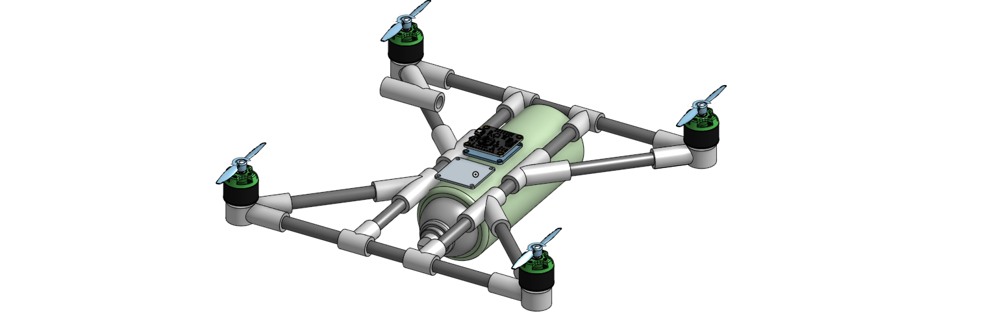

Quadcopter

I designed and fabricated a 10-inch quadcopter for precise aerosol release and package delivery, integrating a YOLOv8-based landing pad visual identification system for real-time detection. To ensure clean, efficient, and maintainable code, I enforced rigorous quality standards using Pylint, Flake8, and Black, achieving 100% code coverage. This project leveraged my skills in 3D printing, C++, soldering, Onshape, and advanced drone technology to deliver a highly functional and reliable system.
Betaflight
C++
Soldering
Onshape
Yolov8
Pylint
Black
Flake8